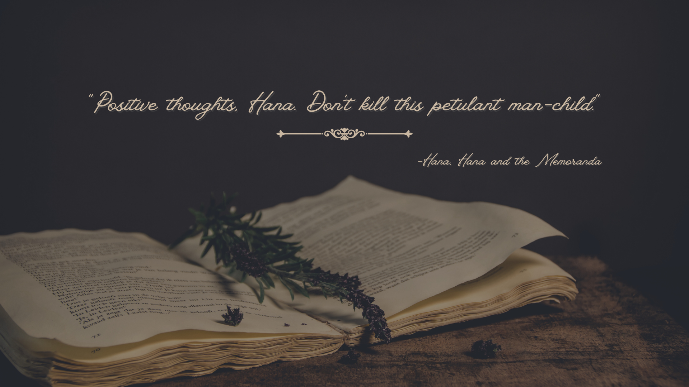

(click on the image above)
My name is Kareena NS, and I am a 3rd-year undergrad student studying computer science at the Georgia Institute of Technology in midtown Atlanta. Subsequently, this also means that this entire website was coded by me in HTML. In 2021, I was awarded an honorable mention for my writing portfolio in the national Scholastic Arts and Writing Awards. I was also a grand prize winner for Amazon Prime’s Modern Love contest hosted on Wattpad. Currently, I am pursuing an agent for my book, Hana and the Memoranda. If you are interested in reading a sample of my writing, you can find the first chapter of Hana and the Memoranda down below. If you have any business inquiries, please reach out to me at the email below. At the very bottom of this page, you can also find all of my socials.
reena.narinesingh@gmail.com
How to… Be Rejected 30 Times
Hana cradled her funnel cake like it was her child. She lost her appetite, but her parents raised her better than to throw away $3.50. The only reason she bought the carnival snack was for her brother to stop big-brother-ing and leave her be.
She sighed, tore off a piece of the golden-brown deliciousness, and let her eyes wander around the park. Hana shivered a bit from the chilly night air. Her dress plunged well past her collarbone.
Children roared screams of excitement and raced each other to the teenybopper rides, teens scoured the park for the greatest thrill rides, and parents chased after both groups like they were balloons a few seconds from floating away.
The scent of buttery popcorn, freshly-fried funnel cake, and sweaty bodies mingled in the air. One of Hana’s favorite summer activities was going to amusement parks. The thrill of adrenaline pounding through the air, electrified by shrieks of delight from those on the rollercoasters… Nothing was better than feeling you, and everyone around you, having a great time. However, today, she felt like a raincloud in a perfectly clear sky.
Hana’s eyes fell on her phone on the table beside her. It was only 6:52, which meant… she turned around and spotted her brother in the building behind her. Posted up at Zoid Destroyer with a roll of quarters on top of the machine, Ethan posed in a typical hardcore, all-nighter stance. She was going to be there for a while.
Splat!
Hana looked down at her funnel cake in the red cardboard boat and groaned. God really did hate her, huh? Hana glanced up at the sky and silently cursed the bird that left its… droppings, behind. That's fine... Hana didn't feel like finishing the funnel cake anyway.
Frustrated, she got up and took one last grimace at the white splatters on the confectionary treat before tossing it in one of the big metal bins near the benches. Maybe a Slurpee would make her feel better.
She tried to peer past clumps of people and see which food carts sold Slurpees, but because she was so short, she had to stand on a bench to see past the crowd. Ah, bingo! A stand with Slurpees and no line!
Hana hopped off the bench and walked over to it, only to be cut off by someone. She opened her mouth to protest, but the boy in front of her turned around and gave her a sickly-sweet smile. Grumbling, she stood in line behind him.
What a jerk. He must have seen her running toward the line.
After a few minutes of angrily fuming, Hana’s turn to order came. She flashed a bright smile and stood on her tiptoes to give the woman behind the forest-green-specked counter her order. After she asked for her blue Slurpee, Hana reached into her pocket for the remnants of the twenty Ethan gave her. Before she grabbed it, though, the cashier interrupted her and said, "Don't worry about it, the boy in front of you paid."
Narrowing her eyes, Hana looked around, but she didn’t see him. Without a word, she shrugged and shuffled through her cash until she found a ten-dollar bill. She told the cashier to pocket the boy’s money and started walking to her picnic table.
However, instead of it being empty, the boy from the line sat with his legs spread out like a starfish. Nodding, Hana bit her lip. Figured. Today was truly the worst day of her life. From the failed singing audition earlier till now… she hadn’t felt this terrible since last year, when she royally screwed up in a dance recital by falling flat on her butt. With dismay, she turned to find another seat somewhere else.
"Wait!"
She paused and turned around to look at him. Their eyes locked, and Hana’s breath caught. It felt like he saw her… truly saw her. Plus, he was insanely attractive. Her eyes left his, and she gave him a once-over.
The haircut the boy sported, and the stupidly expensive clothes wore, told Hana everything she needed to know. He was a rich kid, most likely the brat of a double-income household both making six figures. So much for being hot.
"Sorry, I was just- did you get my change?" He rose from the bench and walked over to her. He was a lot taller than she expected. Hana backed away. "N-no. I g-gave your m-money to the cashier as a t-tip.”
"Are you nervous, shawty?" he asked. Hana cringed and almost laughed. If this was any other day, she would have been rolling on the floor and making fun of him, but it wasn't. Today was today, and today sucked. And she really wasn't in the mood for someone else mocking her stutter.
"T-t-this is j-just how I talk," she said in the harshest tone she could muster. She moved past him with the intention of finding her brother, but the boy cut her path off yet again.
"Listen, I just wanted to apologize for cutting you in line," he said. Hana’s eyes narrowed. He didn’t seem sorry. His lips were curved up in a half-smile. She wished she could read people's minds in situations like this.
"I need to f-find my br-brother, so if you w-would-"
"You know, I've never met a girl like you. You're actually really pretty. You know, for someone so short," he noted, giving Hana a once-over. Her face grew a bright red, and her cheeks fanned with plumes of red heat. What was wrong with him?
"Yeah? Well, you're a jerk," she spat out, turning on her heel.
"You didn't stutter."
Hana paused. As much as she hated to admit it, he was right. After a moment of silence, he cleared his throat. "Just now, when you got mad at me," he pointed out.
By golly, maybe Hana just had to be at her wit’s end all the time to get people to take her seriously. But she didn't think angry-singing Adele would get her a singing gig.
Taking the opportunity to edge closer, the boy continued.
"I didn't mean to insult you. I just meant to say that you're beautiful," he corrected himself, then cocked his head to the side as he stared at her.
He must be questioning her stage get-up. Her brother's boyfriend, Oliver, styled her to perfection. She had to admit when he was finished—she looked good enough to be a model.
In an eggplant purple color, the neckline landed a little lower than Hana would like, but she liked the way it showed off her favorite birthmark just below her clavicle. Oliver paired the dress with a pair of sparkly purple heels that reminded Hana of Dorothy's red shoes from The Wizard of Oz.
Hana felt so confident stepping up on that stage… and then, she got her 30th singing rejection. But she should have guessed that she’d get made fun of, even by a judge that had a speech impediment growing up, too. "Are you a performer somewhere?" he asked.
Hana fiddled with her keychain. "I w-want to be a s-singer.” She couldn't believe she was giving this boy the time of day, but she was fascinated by the fact that she talked to him without stuttering. That had never happened before.
"What's stopping you?" The fact that every place I’ve auditioned to has turned me down. "My stutter and n-nerves," she confessed and plopped down onto the bench. He sat beside her.
"Well, you seemed pretty fine when you were yelling at me. Maybe it's because you like me," he teased.
She scoffed at the ridiculous thought. Her? Like him? Sure, he was cute, but he was also a rich kid, and Hana didn’t like the cocky rich kids that went to her middle school.
"It's b-because I was s-so angry," she justified and folded her arms over her chest.
The boy took a moment before he spoke again. He seemed to be using his brain, something that must be foreign to him.
"Maybe it's because you have something to prove to everyone else," he said, and for once, Hana didn't have anything to retort back. She let her gaze fall to the blue Slurpee in her hands. Taking her silence as the end of the conversation, the boy finished his ice cream and patted her back. "See you around, Popstar."
When Hana glanced back up, the boy was gone, and the rush of people all around seemed so distant. The night breeze swept her hair behind her back. With a long breath, she disappeared into the arcade to find her brother.
She spotted him and groaned. A small group of people surrounded him. Whenever they went anywhere, people always struck up small talk with Ethan... and ogled Hana like a burnt piece of toast. Last year, Ethan and his friends became local heroes because they saved their favorite hangout spot from closing.
Although Ethan had been away for most of the summer at a robotics camp, and Hana had been busy with dance classes, she still felt like a sore thumb.
With a sigh at her luck, she headed toward her brother. The girls that were chatting him up glared at her when she wedged herself between them. Ethan flashed a smile at the girls before turning to Hana.
"Ready to go home?" he asked. She knew he was waiting for her to tell him that she was okay. She couldn't muster up the nerves to say anything positive about today. All she wanted to do was crawl into her bed and sleep for eternity.
Hana gave a tight-lipped smile and nodded as they set off toward the car.